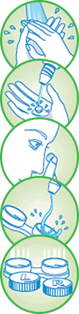
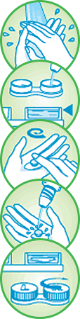

Poskytuje neprekonateľnú
účinnosť dezinfekcie
Biotrue® v sebe spája jedinečné inovácie inšpirované fyziológiou vašich očí v kombinácii s duálnym dezinfekčným systémom.
Jeho pH je rovnaké ako pH
zdravých sĺz (bioinšpirácia)
Biotrue® pomáha udržiavať prirodzený stav oka.
Používa lubrikant, ktorý
sa prirodzene vyskytuje v očiach
(bioinšpirácia)
Biotrue® využíva prirodzený lubrikant vašich očí, ktorý pomáha udržiavať šošovky prirodzene vlhké a pohodlné počas celého dňa.
Zachováva aktivitu niektorých
prospešných proteínov, ktoré
sú prítomné v slzách
(bioinšpirácia)
Biotrue® pomáha zachovať proteíny, ktoré sa nachádzajú v zdravých slzách.
Čo je bioinšpirácia?
Bioinšpirácia je nový vedný odbor, ktorý skúma dizajn nájdený v prírode na navrhovanie prelomových technológií a výrobkov.
Prečo je to dôležité?
Tento odbor priniesol mnoho zaujímavých nápadov a prevratných vecí na každodenné použitie a na zlepšenie komfortu nášho života. Bioinšpirovaný výrobok je taký, ktorého princíp fungovania je založený na systéme nájdenom v prírode. Využitie systému fungovania však už môže mať iný účel ako v prírode.
Biotrue® je inšpirovaný fyziológiou očí a využíva
hneď tri inšpirácie:
JJeho pH je rovnaké ako
pH zdravých sĺz.
Používa lubrikant,
ktorý sa vyskytuje
prirodzene v očiach.
Zachováva aktivitu niektorých
prospešných bielkovín, ktoré
sú prítomné v slzách.
Ako správne čistiť kontaktné šošovky
Na dôkladné vyčistenie a dezinfekciu vašich šošoviek pomocou viacúčelového roztoku Biotrue™ dodržujte tento denný postup:
Ráno
- Umyte si ruky mydlom a osušte ich uterákom, ktorý nepúšťa vlákna.
- Vyberte kontaktné šošovky z puzdra. Vložte ich do dlane a opláchnite ich čerstvým viacúčelovým roztokom Biotrue™.
- Vložte šošovky do očí.
- Vyprázdnite puzdro na šošovky, vypláchnite ho čerstvým viacúčelovým roztokom Biotrue a odstráňte prebytočný roztok.
- Puzdro nechajte otvorené, aby sa osušilo na vzduchu.
Večer
- Umyte si ruky mydlom a osušte ich uterákom, ktorý nepúšťa vlákna.
- Naplňte čisté puzdro na šošovky až po okraj čerstvým viacúčelovým roztokom Biotrue.
- Vyberte šošovku z oka a položte si ju do dlane. Na každú stranu šošovky naneste 3 kvapky viacúčelového roztoku Biotrue a 20 sekúnd ju jemne trite z oboch strán.
- Dôkladne opláchnite každú stranu šošovky čerstvým viacúčelovým roztokom Biotrue po dobu 5 sekúnd.
- Vyčistené šošovky vložte do puzdra na šošovky a naplňte ho čerstvým viacúčelovým roztokom Biotrue.
Tipy pre úspešné nosenie kontaktných šošoviek
Tu sú naše základné tipy pre úspešné nosenie kontaktných šošoviek.
Tieto tipy sú len orientačné, preto sa vždy riaďte odporúčaniami svojho očného špecialistu.
Získajte skúšobný pár ZDARMA
Ešte ste nevyskúšali kontaktné šošovky Biotrue ONEday?
Často kladené otázky
Zdravotnícka pomôcka, pozorne si prečítajte návod na použitie.